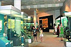
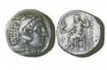

The State Museum of History, Tashkent
Address: 3, Rashidov Ave., Tashkent
Tel.: (+998 71) 239 17 78
Fax:(+998 71) 239 10 83
The State Museum of History of the Academy of Sciences of the Republic of Uzbekistan is one of Central Asia's largest and oldest research and educational institutions, dating back more than 120 years.
The museum contains a unique collection of over 250,000 archeological, numismatic and ethnographic exhibits and archival materials. After the Republic of Uzbekistan became independent, the collection was rearranged to reflect the results of the latest research into history from the Stone Age to the present. The exhibits demonstrate that Uzbekistan is one of the most ancient centers of Eastern civilization. The museum also has rare archive materials representing the major phases of the history of the Uzbek people.
Unique examples of sculpture, painting, ceramics, bronze and glass artifacts, and ritual burial artifacts illustrate the history of the world view and the religious and aesthetic ideas of various epochs.
The exhibits dating from the Temurid period are of special interest. They illustrate the extraordinary flourishing of a medieval civilization of science, poetry, architecture, crafts and miniature painting.
Uzbekistan's entire history reflects the struggle of the people for their independence, which can be seen most clearly in the Museum's exhibits dating from the period of Independence.
Exhibits demonstrating crafts, money circulation and literacy graphically illustrate how statehood was established and formed in ancient times. Uzbekistan's material and artistic culture is represented in the museum by masterpieces of craftsmanship and applied art: ceramics, bronze artifacts, jewelry, and religious artifacts (such as ossuaries and a copy of the Avesta) and ethnographic exhibits. To judge from the masterpieces which have been handed down to us, ancient and medieval craftsmen had reached a very high level of technology. Modern day craftsmen in Uzbekistan are reviving the greatest traditions and preserving these ancient techniques.

